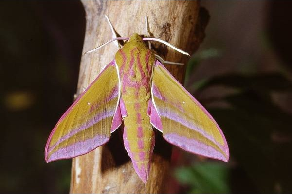
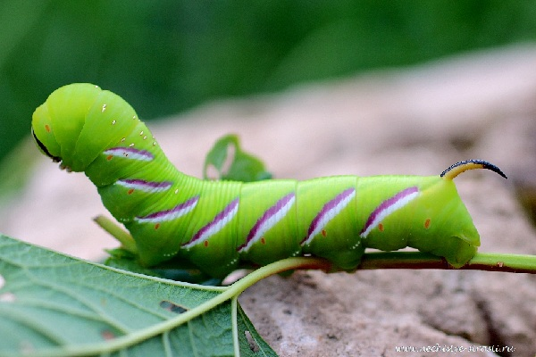
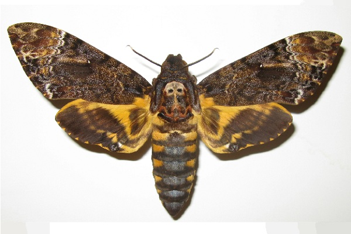

Lime
HAWKER
Hawker is large and heavy butterfly withan interesting structure of wings.It is also called the butterfly "hummingbird".
Hawker has about 1200 types of hearts,including butterflies of different colorsand wing shapes.
Large butterfly with thin wings and a thickabdomen. Because of its thick abdomen,the hawk does not sit on a flower,hence the name "butterfly caliber".The butterfly is covered withsmall hairs similar to fur.Tendrils of medium size are thick.
Caterpillars are large, with drawingson the body and horns.Can be of different colors and patterns.
Interesting facts about hawker:(1) He was called a mantle because when he gets drunk with niktar he starts to wobble drunk.(2) The proboscis with which he drinks niktar can reach a length of up to 35cm.(3) Some individuals have a skull-like pattern on their backs.



Author: Lime|DF
My Mail: dima3lime3lemon3@gmail.com